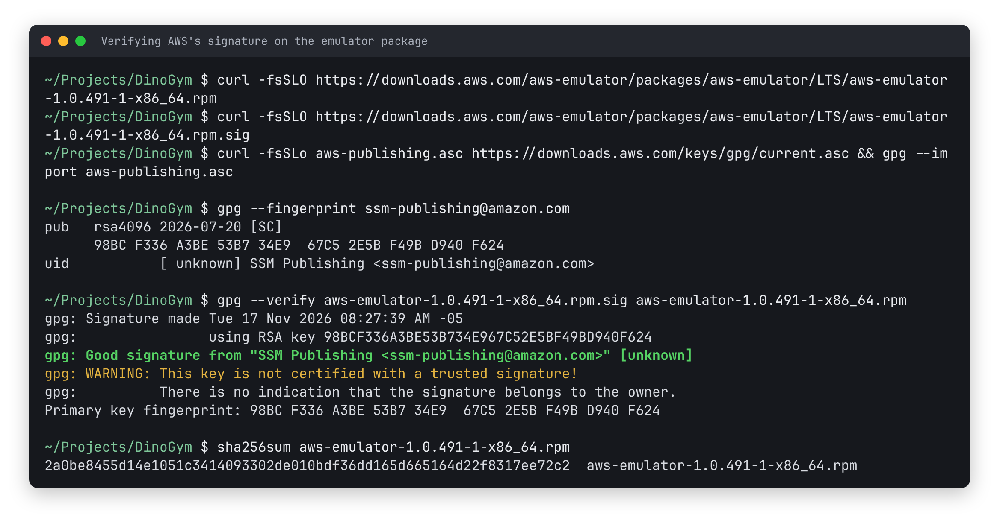
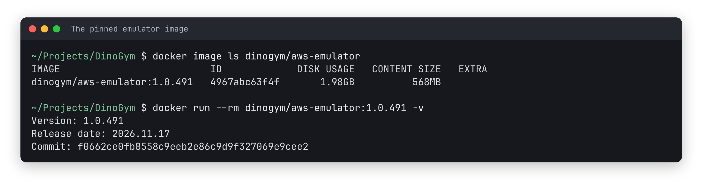
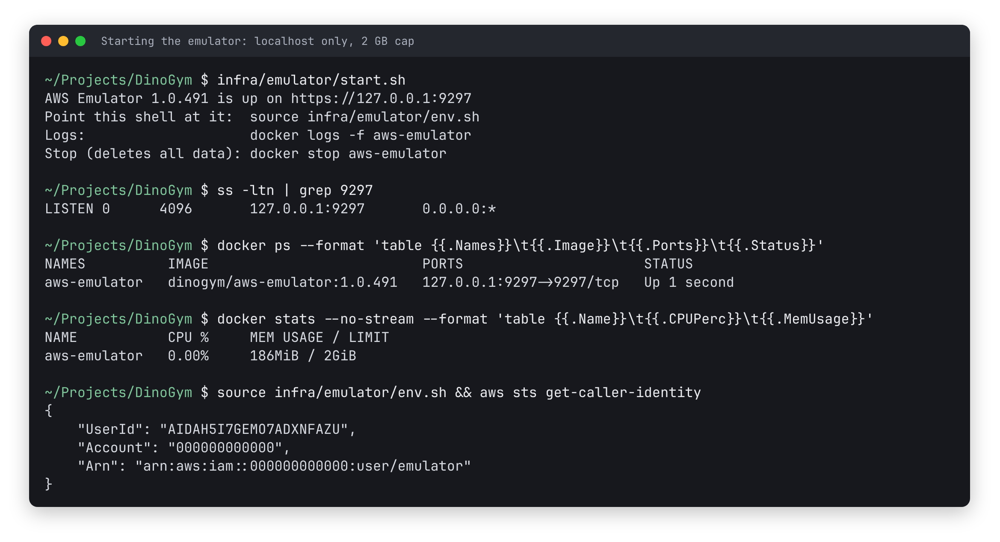
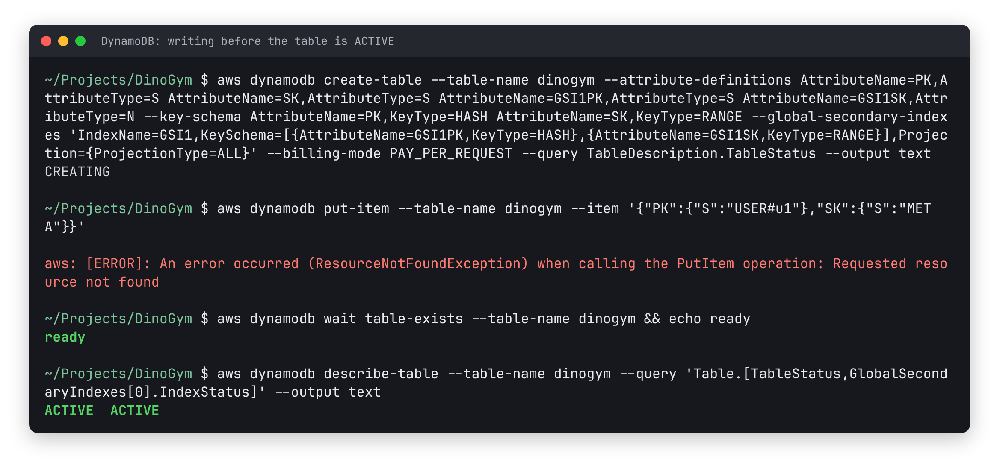
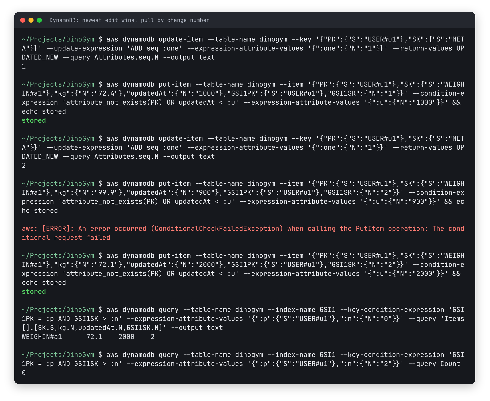
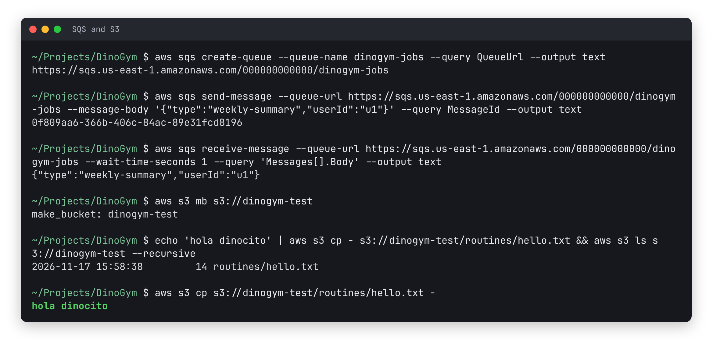
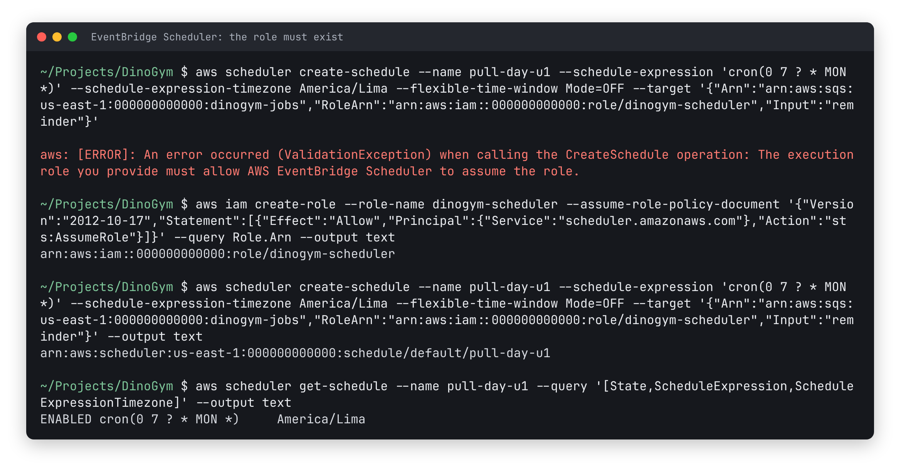
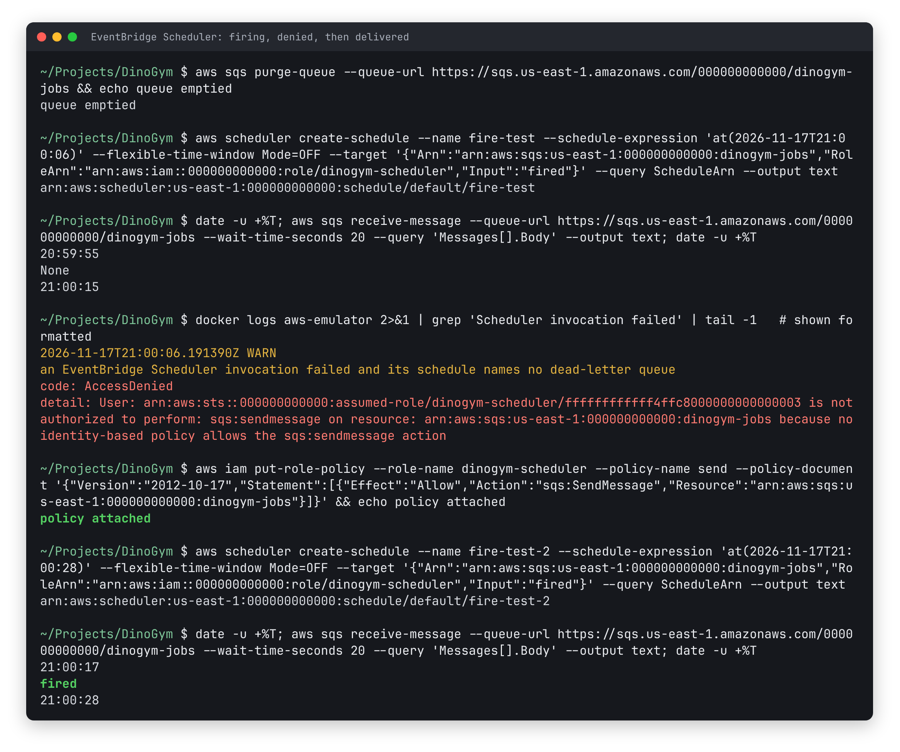
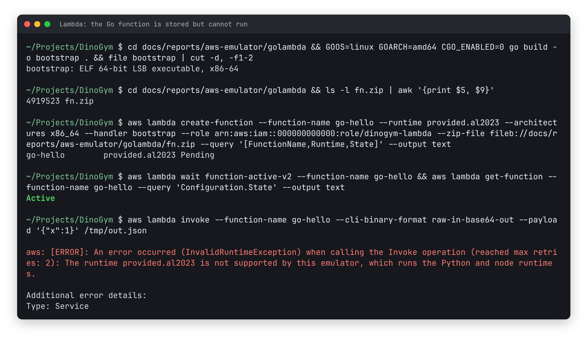
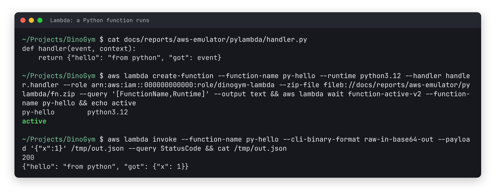

DinoGym's backend will run on AWS for under $10 a month. Before anything is created on real AWS, every change is first proven against the AWS Emulator, a free local program that serves the AWS APIs. This report covers installing it, pinning it, and testing it against each AWS service the backend will use.
| What we need | Result on the emulator |
|---|---|
| DynamoDB: the table from decision 52, "newest edit wins" writes (decision 51), pull by change number | Works, with the same errors as AWS |
| SQS: send, receive, delete | Works |
| S3: bucket, upload, download | Works |
| EventBridge Scheduler: create a schedule and have it deliver on time | Works, and it checks the role's permissions |
| Lambda written in Go | Stored but cannot run: only Python and Node.js run |
| Lambda written in Python (for comparison) | Runs |
| Terraform | Not tested yet (next step of task 14) |
Three project rules make an emulator worth having (decisions 6 and 14):
What it can and cannot prove matters as much. The emulator serves the AWS APIs locally: you create a table, it remembers it; you send an invalid request, it returns the same validation error AWS would. So it proves that our code and configuration use the AWS APIs correctly. It is not AWS: it keeps everything in memory, is not built for load, and does not enforce permissions the way AWS does. It does not prove security, reliability or performance. Staging on real AWS covers those.
Why this emulator in particular: AWS released it in September 2026 as an official, free tool with published fidelity scores (how closely it matches AWS). Decision 14 chose it partly because it is new and current, which makes a better story for a resume project. Gap: the decisions log does not record an alternative that was considered and rejected; that is worth adding.
AWS publishes the emulator only as RPM and Debian packages. The laptop runs Arch Linux, so the documented route is a Docker container. Docker was installed but not running, and using it needed sudo.
sudo systemctl enable --now docker.socket. Docker now starts the first time something calls it, instead of running all the time on a laptop that overheats easily (decision 56).sudo usermod -aG docker "$USER", so Docker works without sudo for the owner, lazydocker and the agent.What went wrong: it still did not work for the agent, twice. A process gets its group list when it starts. The group was added at 23:08, but the T3 Code session had started at 23:00, after the reboot at 22:59. So the agent's shell had no docker group, and newgrp docker in the owner's terminal did not help other programs. The fix was to log out and back in. After that, docker run --rm hello-world worked.
Trade-off we accepted: being in the docker group is effectively root on that machine. Rootless Docker avoids that, but it needs more setup and differs from how CI runs Docker. For a single-user laptop we accepted the risk and wrote it down.
The docs install from …/LTS/latest/…. That address changes with every release, and this emulator is released several times a day: we pinned 1.0.491 (published 13:15 UTC on 17 November), and 1.0.492 and 1.0.497 came out the same day. A pull request test that passes today could fail tomorrow for no reason in our code. So we install one fixed version from its own URL (aws-emulator-1.0.491-1-x86_64.rpm, found through the versions list LTS/versions.json) and upgrade on purpose. The docs warn that security fixes go only into the latest release, so the pin needs to be bumped from time to time.
Before using the package, we checked AWS's signature on it. The key's fingerprint matches the one printed in the AWS docs (98BC F336 A3BE 53B7 34E9 67C5 2E5B F49B D940 F624), and gpg reports a good signature. The warning about the key not being "certified" is expected: it means we have not personally vouched for the key, and the fingerprint check replaces that.

AWS does not publish a container image, so infra/emulator/Dockerfile builds one from Amazon Linux 2023. Both inputs are pinned by checksum: the base image by its digest, and the RPM by its SHA-256 (ADD --checksum=…). If either file ever changes on the server, the build fails instead of quietly using something else. The build took 32 seconds. The image uses 1.98 GB on disk.

infra/emulator/start.sh runs the container in the background with these settings:
127.0.0.1:9297, so no other machine on the network can reach it.--idle-timeout 3600). We found this option in the program's own -h help, so a forgotten emulator cannot run all day.infra/emulator/env.sh points one terminal's AWS CLI at the emulator. It also clears any real AWS credentials from that terminal, because they would take priority over the emulator's.

We created the table exactly as decision 52 describes: one table, partition key PK, sort key SK, and a second index GSI1 on the change number, billed per request. The first mistake showed up immediately. The table starts in the CREATING state, just as on AWS, and writing to it straight away fails with ResourceNotFoundException. Waiting with aws dynamodb wait table-exists fixes it. Our Go code will need the same wait.

Then the sync rules from decision 51:
attribute_not_exists(PK) OR updatedAt < :u) rejects it with ConditionalCheckFailedException, so the newer data survives.
Both worked on the first try: send, receive and delete a job message; create a bucket, upload a file and read it back. One detail: the queue URL looks like a real AWS one (sqs.us-east-1.amazonaws.com), but requests still go to the emulator, because AWS_ENDPOINT_URL overrides the address.

Creating a weekly "pull day" reminder (Mondays 07:00, Lima time) first failed with a ValidationException, because the role it should use did not exist. Real AWS makes the same check. After we created the role with a trust policy for scheduler.amazonaws.com, the schedule was created.

Then the bigger question: does a schedule actually fire? We set a one-time schedule a few seconds ahead and waited on the queue. It fired on the second, but the message never arrived: the emulator's log shows AccessDenied, because the role was not allowed to send to the queue. After we attached a policy allowing sqs:SendMessage, the next schedule delivered fired at its exact time.

We built the smallest possible Go Lambda (about 30 lines, standard library only; source in docs/reports/aws-emulator/golambda/), packaged it the way AWS expects (a Linux binary named bootstrap in a zip), and deployed it with the provided.al2023 runtime. The emulator accepted it and marked it Active. Invoking it failed:

To make sure the problem was Go and not our setup, we deployed a two-line Python function the same way. It ran and returned its answer.

Lambda has "managed runtimes" for languages that need an interpreter or a virtual machine: Python, Node.js, Java and others. Go is different. It compiles to a single native program, so it needs no language runtime. AWS's Go guide says to deploy Go with an OS-only runtime (provided.al2023). The old go1.x runtime is deprecated. With an OS-only runtime, Lambda starts your bootstrap program, and that program asks Lambda's Runtime API (a small local HTTP server) for the next event and posts back the answer. Our test function does exactly that.
aws/aws-emulator (open, "container support for compute services") says Lambda "runs functions packaged as Zip files on the Python and Node.js runtimes. Container images and other runtimes don't run." A comment there reports the same error for provided.al2023 on version 1.0.336, and names Go and Rust as the languages affected.So the answer to "does it only support Python and Node?" is yes, for running code. For managing functions (create, configure, version, permissions) every runtime is accepted, which is why Terraform can still manage our Go function on the emulator.
Since Python and Node.js would run on the emulator, it is fair to ask whether Go was the right choice. Decision 5, as recorded:
The decision log records Kotlin's rejection clearly but gives no reason for Python and TypeScript. The comparison below is our analysis, so the owner can defend the choice in an interview.
| Go (chosen) | Kotlin / Ktor | Python | TypeScript (Node.js) | |
|---|---|---|---|---|
| Cold start on Lambda | Very fast; native binary | Slowest; JVM start-up | Fast | Fast |
| Memory needed (Lambda bills memory × time) | Low | High | Low to medium | Low to medium |
| Deployment | One static binary; nothing to install | Fat JAR | Packages must match Lambda's Linux | node_modules or a bundler |
| Type safety | Compiled, static types | Strong | Optional (type hints) | Static types, checked when compiled to JS |
| Shares code with the Android app | No (OpenAPI instead) | Yes | No | No |
| Fit for DevOps roles | Strong: Docker, Kubernetes, Terraform are written in Go | Weak | Strong for scripting and automation | Medium |
| Runs on the AWS Emulator | No | No | Yes | Yes |
Is Go still right? Yes. The emulator gap affects only the thin layer that receives a Lambda event. The business logic and every AWS call can still be tested against the emulator. A real staging stage was always required for the Lambda path. Python or TypeScript would have closed that one gap, but would have given up Go's single-binary deployment and compile-time checks, and its fit with the DevOps side of the resume. Kotlin was the only option clearly worse on the main constraint (cost and cold start).
Honest point for interviews: Go's cold-start lead is large over the JVM and small over Python and Node.js. The stronger reasons against those two are deployment simplicity, type safety and career fit, not speed.
| Problem | Cause | Fix |
|---|---|---|
| Docker said "permission denied" after joining the group (twice) | Group membership only applies to processes started after it; the session predated the change | Log out and back in |
| The pinned URL was not obvious; guesses returned 403 | Versioned files are named aws-emulator-<version>-1-x86_64.rpm, and the version in the HTTP headers (1.0.491.1) is not the one used in the file name (1.0.491) | Read the docs' versioning page and versions.json |
DynamoDB writes failed with ResourceNotFoundException | The table was still CREATING | Wait for ACTIVE; the Go code must do the same |
Schedule creation failed with ValidationException | The role did not exist | Create the role with a trust policy for Scheduler |
| A schedule fired but nothing arrived | The role had no sqs:SendMessage permission | Attach a policy for that one queue |
| A false "it fired" while recording this report | An earlier SQS message, read but not deleted, became visible again after the 30-second visibility timeout and was mistaken for the schedule's message | Empty the queue before the test; check the message body, not only that something arrived |
| The first recording of the signature and Go steps failed | The agent's temporary folder was cleaned between steps | Keep inputs in a lasting folder; Go source now lives in the repository |
| The Go Lambda cannot be invoked | The emulator runs only Python and Node.js | Section 5 |
-p 9297:9297 publishes it on every network interface. We publish 127.0.0.1:9297 only and checked it with ss.AWS_ENDPOINT_URL is missing, the CLI and SDKs call real AWS with whatever credentials they find. env.sh sets every variable and removes real credentials, and aws sts get-caller-identity must show account 000000000000 before anything else.AWS_DISABLE_HOST_PREFIX_INJECTION breaks some calls on real AWS. The settings apply only to the terminal where env.sh is sourced.localhost instead of 127.0.0.1. Some SDKs then put the S3 bucket name in the host name, and the emulator rejects those requests. We use the IP.-p 2.| Good | Bad or limited |
|---|---|
|
|
Overall: good, for the job we gave it. It is a fast, free first check of how we use AWS, and it already caught three real problems before any money was spent: the wait for a table to be ready, the missing Scheduler role, and the missing send permission. It does not replace staging on real AWS. The project never planned for it to.